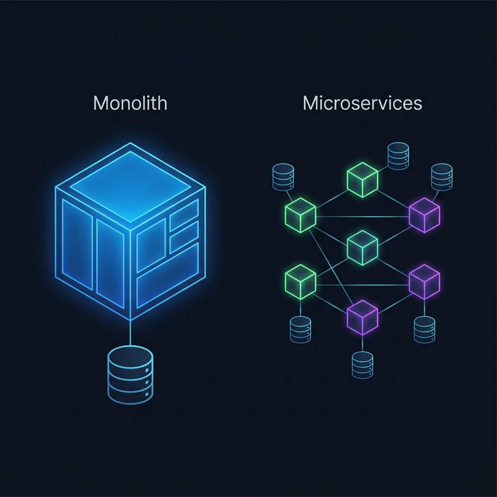
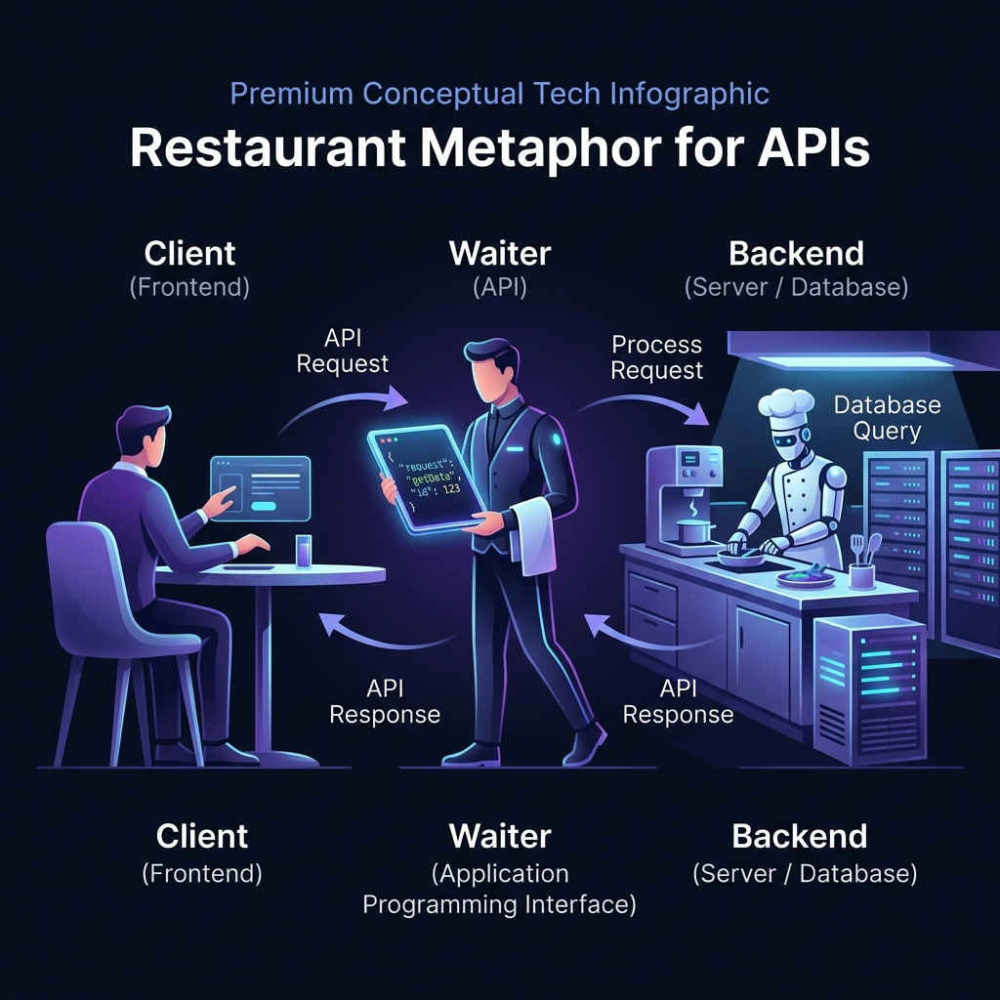

Ilustración Técnica
×
Cómo liderar, estructurar y desplegar productos de software en el nuevo ecosistema ágil y de Inteligencia Artificial. Tu hoja de ruta. Tu hoja de ruta.
El gran salto desde el desarrollo de software clásico hasta la revolución agéntica impulsada por ChatGPT. Miralos acá: Miralos acá:
Era Determinista (Pre-2022): Los programadores escriben reglas rígidas hechas a mano. El software hace exactamente lo que se le codifica ("si pasa A, entonces se ejecuta B"). Mayor control, pero menor adaptabilidad.
Noviembre 2022: El lanzamiento de ChatGPT democratiza y expande la Inteligencia Artificial a nivel mundial. La IA deja de ser exclusiva de científicos de datos y pasa a consumirse masivamente a través del lenguaje natural y APIs.
2023 - 2026: Las empresas ya no construyen software clásico aislado. Integran modelos de lenguaje para procesar datos, interactuar con clientes de forma inteligente y automatizar decisiones autónomas (Flujos Agénticos).
Para entender la Inteligencia Artificial, primero tenés que entender los cimientos del software tradicional.
No es magia libre flotando en la nube. Un modelo de lenguaje moderno se integra a las aplicaciones empresariales consumiéndose como un servicio web externo estructurado. Pensalo así. Pensalo así.
La memoria de trabajo del modelo para los datos privados de la empresa se almacena e indexa mediante búsquedas semánticas en bases de datos vectoriales.
Los flujos inteligentes y las decisiones autónomas que toma un agente de IA corren en un servidor tradicional, orquestados mediante código.
Para sonar actualizado en las entrevistas de IT, es clave que entiendas la profunda evolución del desarrollo de software de los últimos 10 años.

• Arquitectura: Un único bloque gigante acoplado.
• Servidores: Físicos y locales (On-Premise) en la empresa.
• Despliegues: Manuales y caóticos cada 3 meses.
• Cultura: Silos rígidos y aislados entre equipos.
• Arquitectura: Microservicios modulares comunicados por APIs.
• Servidores: Elásticos en la nube (AWS o Azure).
• Despliegues: Automatizados y continuos (múltiples al día).
• Cultura: DevOps de responsabilidad e integración total.
Alquilás servidores de forma elástica en la nube de Amazon por segundo, evitando compras de hardware costoso.
Caja de embalaje cerrada para el software. Te garantiza que funcione igual en tu computadora o en cualquier servidor.
Orquestador que coordina miles de contenedores: los reinicia si fallan y escala el tráfico automáticamente.
Una API permite que sistemas diferentes se conecten entre sí. Mirá esta analogía clásica para entenderlo rápido.

El usuario interactúa con la interfaz gráfica. Abrís el menú digital en tu mesa y seleccionás el plato que querés ordenar.
Toma la orden estructurada del cliente, la traslada de forma segura a la cocina y regresa con el plato. Es el canal de comunicación.
Procesa la orden, tiene acceso directo a la despensa (Base de Datos) y tiene la lógica compleja para preparar lo que pediste.
Las aplicaciones se comunican indicando acciones claras sobre los datos. Como Project Manager, tenés que entender qué hace cada una en la práctica.
Acción: Lee datos sin modificarlos.
Ejemplo: Cargar catálogo de productos.
Seguridad: Nunca uses GET para enviar contraseñas o datos sensibles.
Acción: Guarda datos nuevos en la base de datos.
Ejemplo: Registrar usuario o procesar un pago.
Privacidad: Tus datos viajan ocultos y protegidos en el cuerpo del mensaje.
Acción: Editás un registro existente por completo.
Ejemplo: Modificar cantidades en el carrito.
Control: Modifica la información existente de forma limpia y directa.
Acción: Borra datos de forma permanente.
Ejemplo: Dar de baja una suscripción.
Riesgo: Acción irreversible. Asegurate de que siempre requiera confirmación en la UI.
El servidor te responde con un código numérico estándar que te dice la salud del sistema y el impacto en tu negocio.
El servidor procesó la petición con éxito. La conversión es alta, la velocidad es óptima y tu cliente navega feliz y sin fricciones.
El cliente cometió un error o pidió algo inválido (ej. 404 Not Found). Si este número sube, tu interfaz es confusa; fijate cómo mejorarla.
El servidor falló de forma catastrófica (ej. 500 Server Error). El sistema está caído: perdés ventas y usuarios en tiempo real.
La automatización de despliegues es el corazón de DevOps. Mirá los pasos exactos que sigue una historia de usuario desde que la planeás hasta que llega a producción.
El PM define y refina Historias de Usuario.
El desarrollador escribe la solución localmente.
Integración Continua: testeo automático en la nube.
Entrega Continua: subida a Staging y Producción.
En empresas chicas y startups que crecen rápido, la regla de oro es: "todos hacen de todo". Olvidate de los silos: acá la velocidad manda sobre el proceso.
En grandes corporaciones, la clave es la "especialización extrema". Olvidate de hacer de todo: cada miembro tiene una responsabilidad súper delimitada.
No se escribe código - pero se bloquea o libera el pipeline en los momentos clave de decisión.
Acción del PM
Escribís las User Stories con criterios de aceptación nítidos. Si definís mal la base, todo lo que haga el equipo después va a fallar.
Acción del PM
Tenés que estar disponible para despejar dudas de negocio sin hacer micromanagement. El dev trabaja tranquilo en su rama aislada.
Acción del PM
Revisás con el QA Lead la cobertura de tests. Si el pipeline da rojo, la subida queda bloqueada: no se negocia la calidad.
⭐ Momento Clave
Validás el feature contra tus criterios de aceptación en un entorno seguro. Emitís el Sign-Off o reportás errores.
Acción del PM
Autorizás el Release (decidís cuándo lo ve el cliente). El DevOps gestiona el Deploy. Controlás el timing con un Feature Flag.
¿Qué es un Feature Flag? Es un interruptor en el código. El equipo técnico puede subir una funcionalidad al servidor de producción con ese interruptor en «apagado». El PM decide exactamente cuándo «encenderlo» para los usuarios - puede ser para todos a la vez, solo para un grupo piloto, o coordinado con el equipo comercial. Así el trabajo técnico nunca bloquea al negocio, ni viceversa.
Tu backlog priorizado en Jira se traduce directo en la estrategia de branching. Así conectás tu planificación con el desarrollo real.
En corporaciones, el software pasa por ambientes y controles estrictos para no romper nada. Hacé clic en los nodos para ver el flujo.
Un error típico es confundir dónde se están probando los cambios. Anotate estos 3 ambientes indispensables del software moderno.
El Laboratorio
El Simulador de Vuelo
El Estadio Lleno
Como líder de producto, tenés que entender cómo se guardan y buscan los datos según el problema de negocio que quieras resolver.
El Archivero Perfecto
La Caja de Carpetas Libres
La Biblioteca Mágica en 3D
Traducí tu trayectoria corporativa al léxico ágil y técnico que buscan los reclutadores IT. Mirá la diferencia de impacto.
Hacé clic en cada tarjeta para simular una pregunta de entrevista y ver cómo responderla con autoridad.
"¿Cómo se controla el momento en que una funcionalidad llega al usuario final, si el código ya está en producción?"
Hacé clic para girar"En nuestros equipos usamos lo que se llama un Feature Flag: básicamente un interruptor. El código de la nueva funcionalidad ya está subido al servidor, pero está 'apagado'. Esto nos permite como Product Manager decidir exactamente cuándo 'encenderlo' para los usuarios - puede ser de a poco, solo para un grupo, o coordinado con el lanzamiento comercial. Así el equipo técnico trabaja sin bloqueos y nosotros mantenemos el control del timing del negocio."
"¿Cómo se asegura que varios desarrolladores trabajando en paralelo no se 'pisen' el trabajo entre sí?"
Hacé clic para girar"Cada desarrollador trabaja en su propia copia aislada del código, llamada rama o branch. Es como trabajar en una carpeta separada: lo que uno hace no afecta al resto. Cuando termina su parte, abre una Pull Request - que es básicamente una solicitud de revisión - y un compañero lo revisa antes de integrarlo al código principal. Mientras más seguido se integra, menos problemas de conflictos hay al final del Sprint."
"Si se sube algo a producción y el sistema falla, ¿cuál es el protocolo como Product Manager?"
Hacé clic para girar"Lo primero es restaurar el servicio lo antes posible. Coordino con el equipo técnico para volver a la versión anterior que funcionaba bien - eso se llama rollback - o para aplicar una corrección de emergencia rápida. Una vez que el sistema está estable, hacemos una reunión de análisis: ¿qué falló? ¿qué control de calidad no lo detectó? El objetivo no es buscar culpables sino aprender para que no vuelva a pasar."
¡Te felicito por completar la primera sesión! Tu viaje estratégico de actualización tecnológica recién empieza.
Pensá en dos proyectos previos e intentá describirlos usando el léxico de hoy: ¿tenían un pipeline de entrega? ¿usaban ambientes de staging para UAT? ¿cómo manejaban los cambios en paralelo? El objetivo es que empieces a ver tu experiencia con ojos de líder IT moderno.